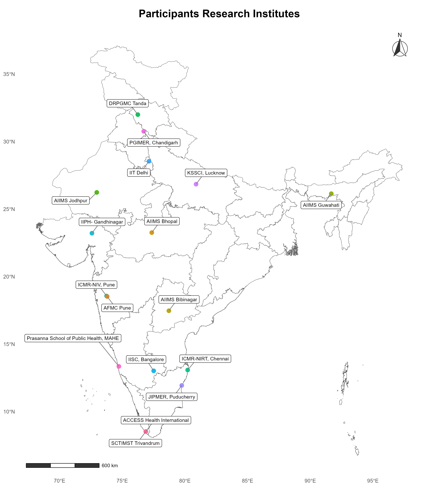

Welcome to R4HTA-India 2025

R4HTA India 2025
Health Technology Assessment Using R
The Regional Resource Centre for Health Technology Assessment (RRC-HTA) at Achutha Menon Centre for Health Science Studies (AMCHSS), Sree Chitra Tirunal Institute for Medical Sciences and Technology (SCTIMST), Thiruvananthapuram, conducted a two-day hands-on workshop on 9–10 September 2025.
Participants from 17 different institutions across India attended the workshop

The training introduced participants to R-based computational methods for conducting transparent, reproducible, and rigorous health economic evaluations and decision modelling.
This website serves as a digital resource portal for:
- Workshop materials (slides, code, datasets)
- Event schedules and sessions
- Updates and announcements
Workshop Objective
The two-day intensive training bridged traditional Health Technology Assessment (HTA) methods with modern R-based computational approaches, enhancing reproducibility, transparency, and analytical rigor in health economic evaluations.
When & Where
- Dates: 9–10 September 2025
- Venue: Sree Chitra Tirunal Institute for Medical Sciences and Technology (SCTIMST), Thiruvananthapuram
What Participants Learned
Participants gained hands-on experience in:
- Basics of R programming for HTA
- Building Decision Trees & Markov Models
- Running Probabilistic Sensitivity Analysis (PSA)
- Creating cost-effectiveness visualizations
- Developing interactive HTA reports
Schedule
Day 1 (9th Sept 2025)
| Time | Session | Topics & Activities | Instructor |
|---|---|---|---|
| 09:00-10:00 | Welcome & Setup | Why R for HTA? Reproducibility, power, and transparency Guided installation of R and RStudio Workshop overview and objectives |
Prof. Biju Soman & Prof. Abhijit Pakhare |
| 10:00-11:00 | RStudio & R Basics | -RStudio interface: Script, Console, Environment, and Plots panes Core concepts: Objects, vectors, and data frames Hands-on practice with basic R commands |
Dr. Arun Mitra |
| 11:00-11:15 | Coffee Break | ||
| 11:15-12:15 | Data Import & Inspection | Data import functions: read_csv(), readxl()Data inspection: head(), str(), summary(), glimpse()Activity: Load HTA dataset and explore structure |
Prof. Abhijit Pakhare & Dr. Arun Mitra |
| 12:15-13:00 | Data Wrangling (dplyr) | Core verbs: select(), filter(), arrange(), mutate()The pipe operator |
Dr. Arun Mitra |
| 14:00-15:15 | Decision Tree Modeling | Theory: Decision nodes, chance nodes, and terminal nodes Activity: Code and run a decision tree to calculate expected costs and QALYs |
Prof. Biju Soman & Prof. Abhijit Pakhare |
| 15:15-15:30 | Coffee Break | ||
| 15:30-16:15 | Data Visualization (ggplot2) | Grammar of Graphics: aes() mapping and geom_ layersActivity: Create cost distributions and outcome visualizations |
Dr. Rehna Mohamed & Mr. Arun Jose |
| 16:15-17:30 | Group Activity | Hands-on | All |
Day 2 (10th Sept 2025)
| Time | Session | Topics & Activities | Instructor |
|---|---|---|---|
| 09:00-10:00 | Modeling Concepts | Markov model fundamentals: States, transitions, and cycles Activity: Define model parameters (costs, utilities, probabilities) as R objects |
Prof. Abhijit Pakhare & Dr. Ashis John |
| 10:00-11:00 | Building the Engine | Transition matrices: Movement probabilities Activity: Create state cost and utility vectors |
Prof. Abhijit Pakhare & Dr. Arun Mitra |
| 11:00-11:15 | Coffee Break | ||
| 11:15-12:00 | Running the Model | Implementation using for loops Activity: Run simulation and aggregate costs and QALYs for treatment strategies |
Prof. Abhijit Pakhare |
| 12:00-13:00 | PSA Setup | Probabilistic sensitivity analysis theory Activity: Define distributions for parameters using rbeta(), rgamma() |
Dr. Ashis John & Mr. Arun Jose |
| 14:00-15:00 | Running the PSA | Monte Carlo simulation implementation Activity: Execute PSA with 1,000+ iterations and store results |
Prof. Abhijit Pakhare |
| 15:00-15:45 | Visualizing PSA Results | Cost-effectiveness plane and acceptability curves Activity: Create publication-ready HTA visualizations using ggplot2 |
Prof. Biju Soman & Dr. Arun Mitra |
| 15:45-16:00 | Coffee Break | ||
| 16:00-16:45 | Interactive Reporting | Quarto and Shiny integration Activity: Develop interactive HTA report and application |
Prof. Abhijit Pakhare |
| 16:45-17:30 | Closing Remarks | Valedictory and Feedback | All |
Facilitators
 |
Dr. Biju Soman PI, Regional Resource Centre - HTA, SCTIMST, Trivandrum |
| Dr. Abhijit Pakhare PI, Regional Resource Centre - HTA, AIIMS — Bhopal |
|
 |
Dr. Arun Mitra Assistant Professor, AIIMS — Bibinagar, Hyderabad |
| Dr. Ashis Samuel John Scientist - C, RRC - HTA, SCTIMST, Trivandrum |
|
| Dr. Rehna C Mohamed Health Economist, RRC - HTA, SCTIMST, Trivandrum |
|
| Mr. Arun Jose Research Scholar, SCTIMST, Trivandrum |